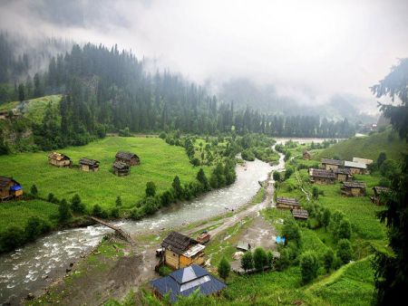
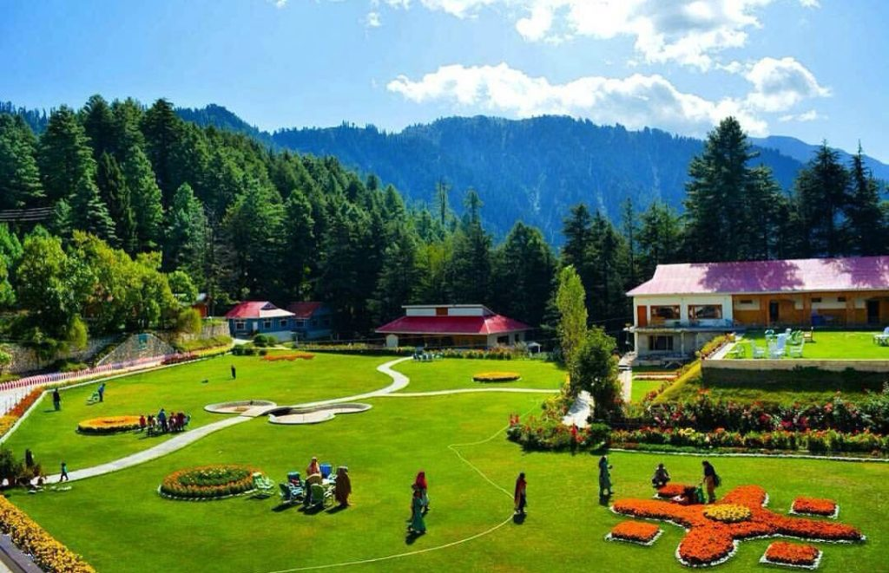

Shogran Valley is the perfect place to go. Its tall mountains will bar you away from worldly life and the green grass will calm the mind buzzing with materialistic worries. Cool refreshing winds will revive your spirit and soul. And guess what, Shogran is much nearer than other Northern Areas in Pakistan. You’ll find the reflection of fairy meadows in the expanse of Siri Paye. The charm of Naran in its landscape. The beauty of Skardu in its snow-capped mountains. In other words, it’s a shortcut to exploring Pakistan’s Northern magnificence.
Shogran Valley is located in the famous Kaghan Valley located in Khyber Pakhtunkhwa (KP), Pakistan. Shogran’s height is around 7,749 feet above sea level. Shogran Valley’s total distance from Islamabad is around 229.6 km and from Balakot it is 34 km. The distance from Shogran to Naran is 67 km approximately and from Shogran to Hunza is around 220 km.
Shogran Valley in winter reaches the epitome of cold temperatures with frigid winds and heavy snow. In fact, the valley is mostly open to visitors during the peak summer months, especially June, July, and August. During the daytime in summers, the weather is pleasant and sunny, ranging around 20 degrees. However, at night, the weather drops down and you’d feel the need to wrap around a shawl.
The journey to the lake starts from the capital city of Pakistan – Islamabad. From there, one can either opt for the local transport on a tiny budget or choose to travel privately. Expediting the journey on Hazara Motorway, one will reach Mansehra city from Abbottabad. From the city of Mansehra, one has to take the Naran-Babusar top road, which leads straight to the valley of Naran Kaghan via Balakot. After reaching the Naran valley, tourists can visit Saif ul Malook by a thrilling hike or a 30-minute adventurous and curvy jeep ride
As always, the best option is your own private vehicle when travelling to the North. We cannot say the same for the driver though! The limitation of going with a travel agency car is that it is time-bound. Another option is the bus ride to Balakot and arranging a private car to Shogran upon reaching there.
